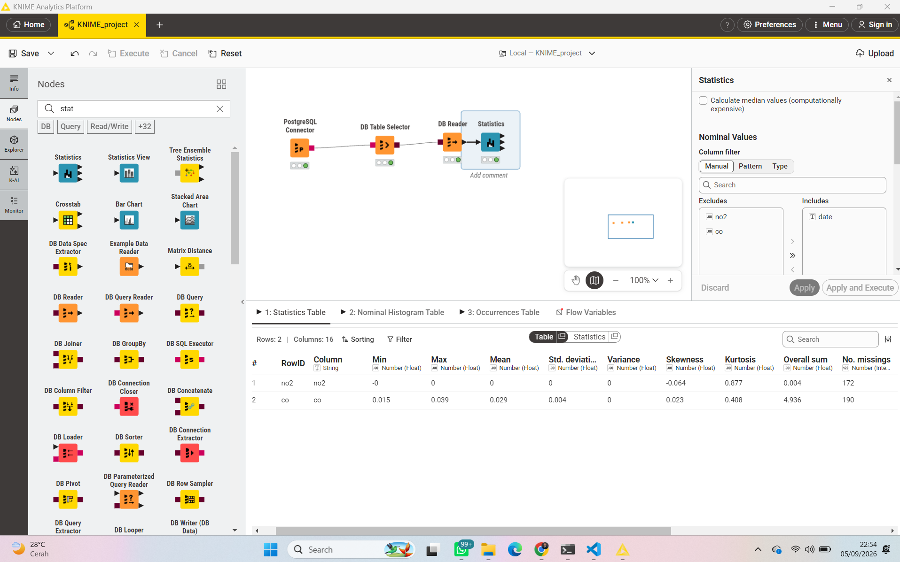
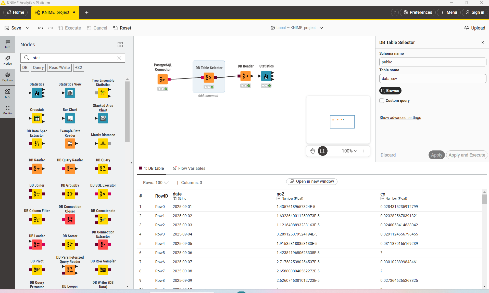
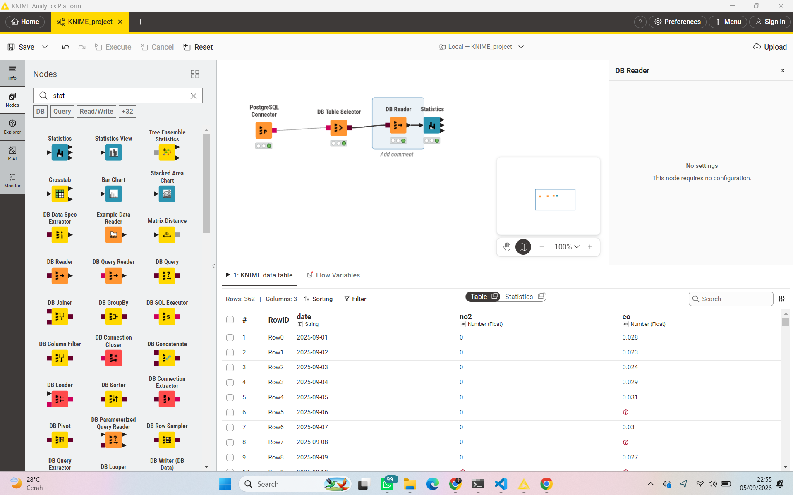

4. Migrasi Data ke Cloud (Aiven) & Statistik di KNIME#
4.1 Ringkasan alur#
Data time series NO2 & CO yang sudah dihasilkan minggu lalu
(data/kualitas_udara_bundah_sreseh.csv, 362 hari) dipindahkan ke database
cloud Aiven PostgreSQL, lalu ditarik ke KNIME Analytics Platform
lewat workflow berikut:

Alurnya: PostgreSQL Connector → DB Table Selector → DB Reader → Statistics.
Note
🔒 Jangan taruh Service URI/host/password Aiven yang asli di halaman ini atau file manapun yang di-push ke repo publik.
4.2 Struktur tabel di Aiven#
CREATE TABLE data_csv (
date TIMESTAMP,
no2 NUMERIC,
co NUMERIC
);
Parameter |
Nilai |
|---|---|
Host |
|
Database |
|
Schema |
|
Table name |
|
User |
|
SSL mode |
|
4.3 Verifikasi data: DB Table Selector vs DB Reader#
Sebelum masuk ke node Statistics, ada dua hal menarik yang kelihatan dari node-node sebelumnya:

DB Table Selector menampilkan data dengan presisi penuh (notasi
ilmiah), misalnya baris pertama no2 = 1.43576189657324E-5 (artinya
0.0000143576… ). Ini konsisten dengan CSV asli hasil crawling minggu
lalu.

DB Reader menampilkan kolom no2 sebagai 0 di semua baris. Ini
bukan berarti datanya jadi nol — itu cuma pembulatan tampilan
default KNIME (kolom NO2 nilainya di orde 0.00001, sedangkan tampilan
tabel default cuma menunjukkan beberapa desimal). Bisa dicek/diubah lewat
klik kanan kolom → Number Format kalau mau lihat desimal lebih
banyak. Simbol ? di beberapa baris kolom co (mis. baris ke-6 dan
ke-8) menandakan nilai kosong (missing/NULL) — konsisten dengan
temuan minggu lalu bahwa banyak hari tidak punya data valid akibat
tutupan awan.
4.4 Node Statistics — penjelasan, rumus, dan contoh perhitungan#
Node Statistics menghitung ringkasan untuk setiap kolom numerik
(no2 dan co) sekaligus. Supaya perhitungannya bisa ditelusuri manual,
contoh di bawah memakai 5 hari pertama — angkanya diambil persis dari
tampilan presisi penuh di DB Table Selector di atas:
No |
Tanggal |
NO2 (mol/m²) |
CO (mol/m²) |
|---|---|---|---|
1 |
2025-09-01 |
0.0000144 |
0.028432 |
2 |
2025-09-02 |
0.0000163 |
0.023283 |
3 |
2025-09-03 |
0.0000112 |
0.024006 |
4 |
2025-09-04 |
0.0000329 |
0.029112 |
5 |
2025-09-05 |
0.0000192 |
0.031187 |
Contoh perhitungan di bawah pakai kolom CO (n = 5) karena angkanya lebih mudah dibaca manual. Cara yang sama berlaku persis untuk NO2.
a. Row Count#
b. No. Missings#
Hasil nyata dari node Statistics kamu: NO2 = 172 hari kosong, CO = 190 hari kosong (dari 362 hari total).
c. Min & Max#
Contoh (CO, 5 data): Min = 0.023283, Max = 0.031187 Hasil nyata (172 data valid): Min = 0.015, Max = 0.039 (dibulatkan 3 desimal oleh KNIME)
d. Overall Sum#
Contoh (CO): \(0.028432+0.023283+0.024006+0.029112+0.031187 = 0.136020\)
Hasil nyata: Overall sum CO = 4.936, NO2 = 0.004 (NO2 tampak kecil karena satuannya memang orde 0.00001 dan cuma 190 data valid).
e. Mean#
Contoh (CO): \(\bar{x} = 0.136020/5 = 0.027204\) Hasil nyata: Mean CO = 0.029, Mean NO2 tampil 0 di tabel (dibulatkan; nilai aslinya sekitar 0.000021 — lihat catatan pembulatan di bagian 4.3).
f. Median#
Urutkan data, ambil nilai tengah. Contoh (CO): terurut →
0.023283, 0.024006, 0.028432, 0.029112, 0.031187 → median = 0.028432
(node Statistics kamu tidak mengaktifkan opsi “Calculate median values”,
jadi kolom ini tidak muncul di tabel — bisa dicentang kalau mau
ditampilkan).
g. Variance#
\(x_i\) |
\(x_i-\bar x\) |
\((x_i-\bar x)^2\) |
|---|---|---|
0.028432 |
0.001228 |
0.0000015 |
0.023283 |
-0.003921 |
0.0000154 |
0.024006 |
-0.003198 |
0.0000102 |
0.029112 |
0.001908 |
0.0000036 |
0.031187 |
0.003983 |
0.0000159 |
Hasil nyata: Variance CO ditampilkan 0 (nilai aslinya sangat kecil, ≈0.0000134, hilang karena pembulatan 3 desimal).
h. Standard Deviation#
Contoh (CO): \(s = \sqrt{0.00001165} \approx 0.003414\) Hasil nyata: Std deviation CO = 0.004, NO2 = 0 (tampilan; nilai asli NO2 ≈ 0.000011, sudah dikonfirmasi juga lewat notebook Python minggu lalu).
i. Skewness (kemencengan distribusi)#
Mengukur apakah distribusi condong ke kiri (skewness negatif) atau ke kanan (skewness positif) dibanding distribusi normal yang simetris (skewness = 0).
Contoh (CO, 5 data): \(s_{pop} = \sqrt{0.00000932} = 0.003053\), jumlah \((x_i-\bar x)^3 = -0.0000000210\), sehingga
Hasil nyata (172 data): Skewness CO = 0.023, NO2 = -0.064 — keduanya sangat dekat 0, artinya distribusi relatif simetris. Nilai contoh manual (-0.148) beda karena cuma pakai 5 data — statistik orde tinggi seperti skewness butuh data lebih banyak baru stabil.
j. Kurtosis (keruncingan distribusi)#
Mengukur apakah distribusi lebih “runcing dan berekor tebal” (kurtosis positif) atau lebih “datar” (kurtosis negatif) dibanding distribusi normal (kurtosis = 0, konvensi excess kurtosis yang dipakai KNIME).
Contoh (CO, 5 data): jumlah \((x_i-\bar x)^4 = 6.08\times10^{-10}\), \(s_{pop}^4 = 8.69\times10^{-11}\), sehingga
Hasil nyata (172 data): Kurtosis CO = 0.408, NO2 = 0.877 — keduanya positif tapi kecil (sedikit lebih “runcing” dari distribusi normal, tidak ekstrem). Lagi-lagi contoh manual (n=5) menghasilkan angka sangat berbeda (-1.60) karena sampelnya terlalu kecil untuk mengukur bentuk ekor distribusi dengan andal.
Ringkasan hasil node Statistics (data asli, 362 hari)#
Statistik |
NO2 |
CO |
|---|---|---|
Min |
-0 (≈ -0.000022) |
0.015 |
Max |
0 (≈ 0.000052) |
0.039 |
Mean |
0 (≈ 0.000021) |
0.029 |
Std. deviation |
0 (≈ 0.000011) |
0.004 |
Variance |
0 (≈ 0.00000000012) |
0 (≈ 0.0000134) |
Skewness |
-0.064 |
0.023 |
Kurtosis |
0.877 |
0.408 |
Overall sum |
0.004 |
4.936 |
No. missings |
172 |
190 |
(Angka dalam kurung miring adalah nilai asli sebelum dibulatkan tampilan
KNIME — dikonfirmasi silang dengan hasil describe() di notebook Python
minggu lalu, hasilnya cocok.)
4.5 Pra-pemrosesan lanjutan di KNIME#
String to Date&Time: memastikan kolom
datedikenali sebagai format waktu, bukan teks.Missing Value: mengisi hari-hari kosong (simbol
?) dengan interpolasi linear, supaya time series tidak terputus untuk keperluan visualisasi/pemodelan lanjutan.GroupBy / Time Series Aggregation: merangkum data harian menjadi rata-rata mingguan/bulanan untuk melihat tren jangka panjang lebih jelas (sudah dicoba sebelumnya di notebook 03 versi Python).
4.6 Kesimpulan#
NO2 bernilai sangat kecil (orde 0.00001), sehingga di tampilan default KNIME angkanya kelihatan “0” di banyak kolom (Min, Max, Mean, Std, Variance) — ini murni pembulatan tampilan, bukan data yang rusak atau salah crawl. Nilai aslinya sudah dikonfirmasi lewat DB Table Selector dan notebook Python.
Missing value CO (190 hari) lebih banyak dari NO2 (172 hari), konsisten dengan temuan minggu lalu — kemungkinan karena algoritma retrieval CO Sentinel-5P butuh syarat kualitas citra yang sedikit lebih ketat dibanding NO2.
Skewness NO2 (-0.064) dan CO (0.023) sama-sama mendekati 0 → distribusi kedua polutan relatif simetris, tidak didominasi outlier ekstrem di salah satu sisi.
Kurtosis NO2 (0.877) dan CO (0.408) sama-sama positif tapi kecil → distribusi sedikit lebih “runcing”/berekor tebal dibanding distribusi normal, tapi masih dalam batas wajar, bukan indikasi anomali serius.
Data sudah siap untuk tahap pemodelan/forecasting lanjutan setelah penanganan missing value (interpolasi) di KNIME.